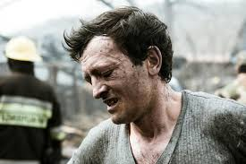
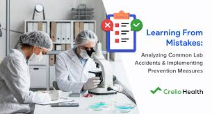

Chemical Incidents
OVERVIEW
A chemical incident is the uncontrolled release of a toxic substance, potentially resulting in harm to public health and the environment. Chemical incidents can occur as a result of natural events, or as a result of accidental or intentional events. These incidents can be sudden and acute or have a slow onset when there is a ‘silent’ release of a chemical. They can also range from small releases to full-scale major emergencies.

The latest data addendum estimates that 2 million lives and 53 million disability-adjusted life-years were lost in 2019 due to exposures to selected chemicals. These estimates continue to be higher than previously published estimates (1.6 million lives and 45 million disability-adjusted life-years lost in 2016, and 1.3 million lives and 43 million disability-adjusted life-years lost in 2012).
Data are however only available for a small number of chemical exposures and people are exposed to many more chemicals every day. These estimates of the burden of disease are therefore underestimated.
CAUSES
The term “chemical incident” might refer to anthropogenic or technological events, including:
- an explosion at a factory that stores or uses chemicals
- contamination of the food or water supply with a chemical
- a leak from a storage unit during transportation
- deliberate release of chemicals in conflict or terrorism
- an outbreak of disease that is associated with a chemical exposure.
- Chemical incidents arising from natural sources include volcanos, earthquakes and forest fires. An estimated 65 000 people died due to technological events between 2009-2018.
- an oil spill
Chemical incidents arising from natural sources include volcanos, earthquakes and forest fires. An estimated 65,000 people died due to technological events between 2009-2018.
As the production and use of chemicals continues to increase worldwide the health sector must expand its traditional roles and responsibilities to be able to address the public health and medical issues associated with the use of chemicals and their health effects.
PREVENTION
Poisoning from pharmaceuticals, industrial chemicals, pesticides, chemical products and natural toxins is a significant global public health problem. WHO seeks to build capacity in countries to deal with these problems, and an important area of activity is promoting the establishment and strengthening of poisons centres.
A poisons centre is a specialized service that advises on the diagnosis and management of poisoning and collects data to inform poisons prevention activities. Poisons centres play an important role in identifying and assessing the toxic risks in a population, e.g. from emerging toxicological hazards – this is called toxicovigilance. Poisons centres also collect data to improve knowledge about the human health effects of chemicals. Poisons centres contribute to the national capacities required under the International Health Regulations for surveillance, preparedness and response for public health events involving chemical agents.
